🚄 杭州出发 + 天气
高德实时预报（撰写时）· 10月初气候参考
列车衔接
- 抵达：长沙南站 11:50（请以12306你的车次为准）
- 杭州东→长沙南：常见高铁约 3.5–5 小时；若 11:50 到站，反推杭州东大约 07:00–08:30 发车一档（如 G85 类约 3h40，普通约 4h+）
- 出发当天：杭州东预留安检+候车 40–50 分钟；国庆建议提前取纸质票或刷证进站
- 行李：出站后优先打车去北辰洲际（国庆地铁+步行拿大件很累）
南站 → 洲际
- 打车（高德实测）：长沙南→洲际 20.7 km / 约 36 分钟（畅通）；返程洲际→长沙南 22.3 km / 约 41 分钟
- 国庆预留：首日按 45–70 分钟算 → 约 12:40–13:30 到酒店
- 地铁：约 60 分钟+步行换线（2号线转1号线），大件不推荐
- 上车点：长沙南网约车按 APP 指引；出租车在指定通道
- 酒店：湘江北路三段1500号，大堂需走坡道约 68 米
🌤️ 天气（高德）
长沙实况（高德 API · 抓取于 9/24）：
- 9/24 多云 32/23°C · 9/25 晴 35/26°C
- 9/26 晴 34/26°C · 9/27 晴 34/27°C
以上为高德实时接口返回值，不是10.1 预报；出行前请用高德/天气 App 刷新 10.1–10.5。
- 10月初经验：白天可短袖+薄外套，早晚凉；国庆常有阵雨 → 折叠伞+透气鞋
- 岳麓山/橘子洲日照强：防晒、水、帽子
- 出发前再用高德/天气 APP 看 10.1–10.5 五日预报微调穿衣
📅 今日速览
根据当前日期自动显示当日建议
🗺️ 五日行程（按 11:50 抵达重排）
基地：北辰洲际 · 近的先玩 · 远线单独一天
💝 按她的喜好改过的版本
数据来源：微博 ups_and_downs_tz（浙江）原创帖 + 既有国庆偏好分析。不猜心思，只对齐可观察偏好。
- 她要的：睡够、一天至多一个硬安排、住得舒服、城内别拉练、有人把攻略扛完
- 她怕的：十一人挤人、堵车、连轴爬山、「来都来了」景点清单、自己从一堆攻略里做选择
- 因此本版：岳麓改成可选；文和友排队超久就换黄娭毑；坡子街不进；每天标「必做 / 可跳过」；累了直接回洲际算胜利
- 主线锚点：湖南博物院（她吃文化讲解）+ 长沙本地吃（她吃排行榜/性价比）+ 滨江慢走（她夸过水岸公园式舒适）
- 微博本地信号（刚爬）：3060 帖 / 906 条可操作贴 → 坡子街避雷×28、文和友排队吐槽极多、茶颜/甘长顺/玉楼东正向、橘子洲勿走穿要坐观光车、省博后可慢逛烈士公园
📡 微博本地信号已写进每日行程
爬取 3060 帖（工作生活/打工人美食/避雷/博物馆等）→ 抽出与她「慢、少排队、文化+吃」重合的细则。完整摘录见下方 微博手册；每日卡片里的「微博札记」是可执行版。
10/1（周四）午达长沙南 · 入住 + 滨江轻松线
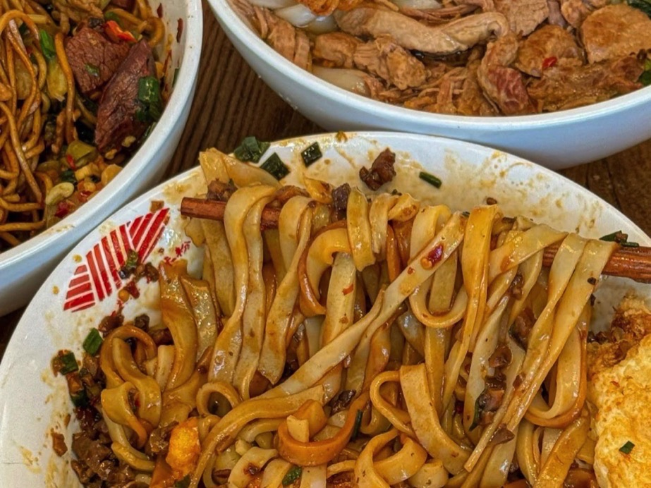
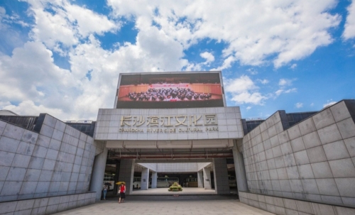
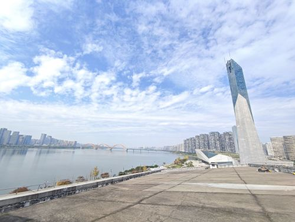
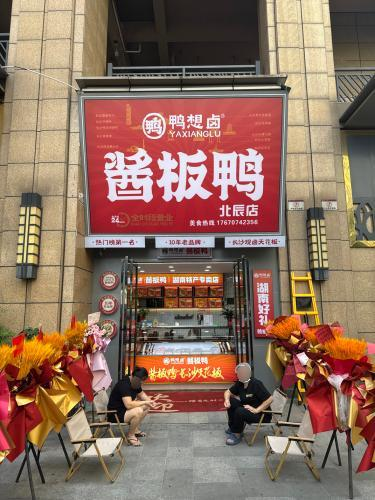
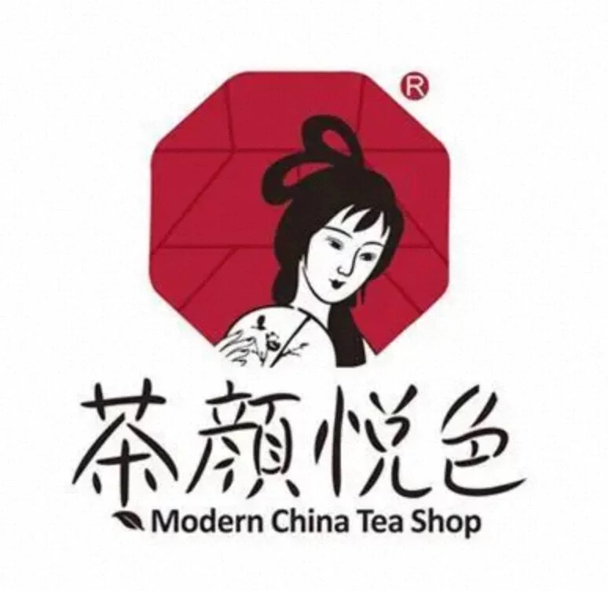
11:50 到站 → 打车入住 → 下午只走酒店周边，养足力气给后面经典线。
⏰ 详细时间表
- 11:50 长沙南出站（出站口跟人流走，别在站内磨）
- 12:05–12:20 打到网约车/出租（国庆排队可能多，耐心）
- ≈12:50–13:30 到北辰洲际办理入住、放行李、洗把脸
- 13:30–15:00 🍜 八一桥原味粉馆（奥城，人均约¥16）或酒店湘秀/栀味轩；顺路买酱板鸭
- 15:30–18:00 🚶 步行滨江文化园 / 北辰滨江公园：三馆一厅外观、景观塔、江景
- 高匹配备选：同片区长沙博物馆 / 市图书馆（她会喜欢的室内文化点，比再去网红街强）
- 18:30–20:00 晚上可茶颜（北辰荟）+ 酱板鸭；想正餐再去奥城找本地馆
- 今晚必做：微信预约 10/2 湖南博物院时段（提前约5天放票规则，尽早锁）
📷 今日打卡机位
- 洲际大堂坡道：酒店门脸全景，行李箱入镜（到店即拍）
- 滨江文化园景观塔：仰拍建筑线条；黄昏逆光好看
- 湘江江景步道：河东江面+晚霞，少游客滤镜感
- 北辰荟罗马广场：商场中庭对称构图
📓 微博札记 · Day1
- 打工人周末帖常见节奏：睡到自然醒 → 嗦粉 → 茶颜 → 江边，首日就按这个养状态
- 北辰/滨江「三馆一厅」被写成楚韵+江景同框；累了进长沙博物馆/市图吹空调，比冲五一强
- 多帖提醒：景点/省博要提前预约——今晚一定把 10/2 票锁死
本地人提醒
- 首日别冲五一/文和友——人从南站刚进城最疯，而且来回浪费
- 点菜说「微辣/免辣」：长沙默认辣度对杭州胃往往偏重
10/2（周五）湖南博物院（主线）+ 烈士公园慢走 · IFS 可砍
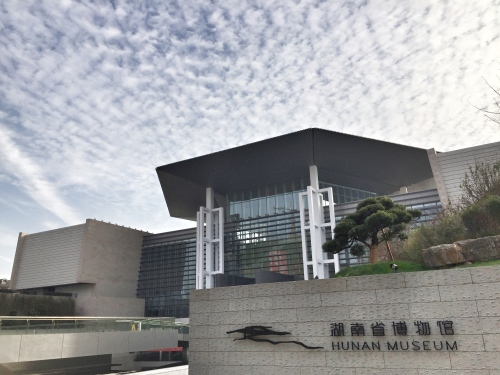
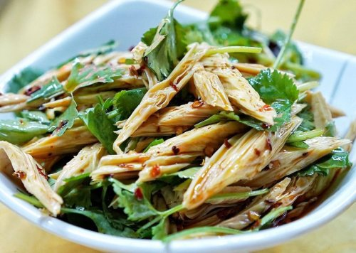
⏰ 详细时间表（微博本地向改）
- 睡够再出：按预约时段到省博即可，不必为 IFS 早起
- 必做：🏛️ 湖南博物院（东风路50号）马王堆；能约讲解更好
- 午餐：甘长顺 / 杨裕兴 / 笨罗卜育英街
- 下午首选：🚶 烈士公园（省博旁）情侣慢走——比硬冲商圈更贴她
- 可跳过：IFS；茶颜可回北辰荟解决
- 晚饭：玉楼东北正街 或 回北辰八一桥粉（不进坡子街）
📷 打卡机位
- 省博外观大台阶：正面全景，人少时最佳
- 马王堆展厅：禁止闪光；拍展板/空间即可
- 烈士公园湖边/路径：人少树荫，适合并肩走
📓 微博札记 · Day2
- 高频结构：湖南省博物馆（免费需预约）→ 烈士公园「出来就是，适合情侣逛」——比 IFS 打卡更贴她
- 马王堆是她会吃的「讲解/典故」型内容；馆内不求刷完，看镇馆即可
- 粉面：微博本地贴强调别在太平街/坡子街/五一主街吃粉（溢价预制）；甘长顺/杨裕兴或小区老店
- 辣度：有帖写「长沙没有微辣」「微微微辣仍辣哭」——开口必须冒辣
预约
- 微信/支付宝「湖南省博物馆」，约提前5天、每晚约20:00放票；带证件原件
- 国庆开放含 10.1–10.7；最晚入馆时间以当日公告为准
10/3（周六）橘子洲为主 · 岳麓书院可选（体力友好）
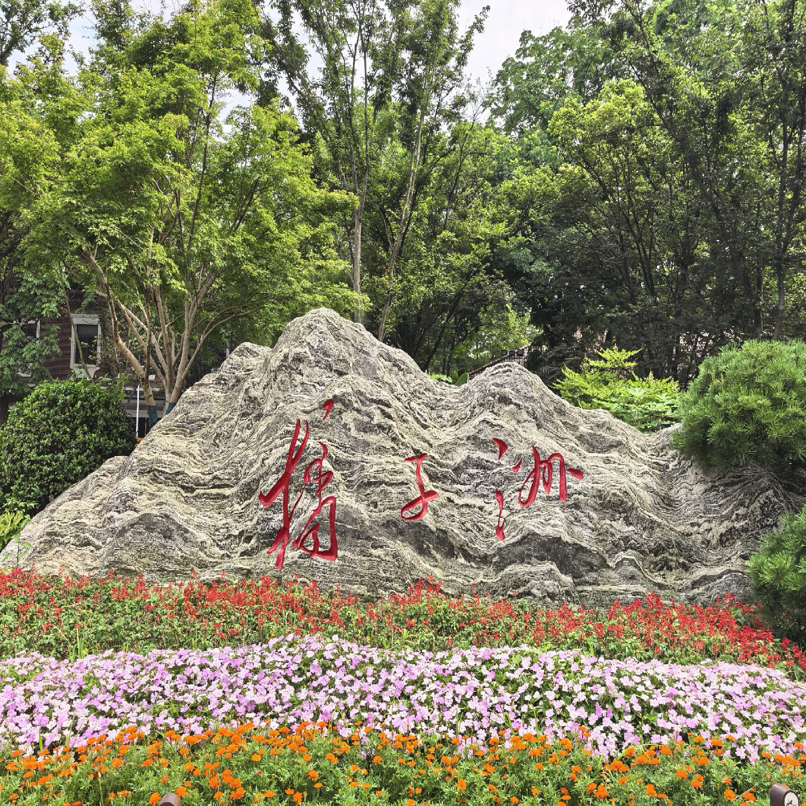
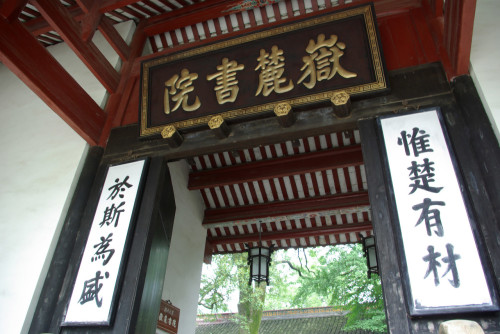
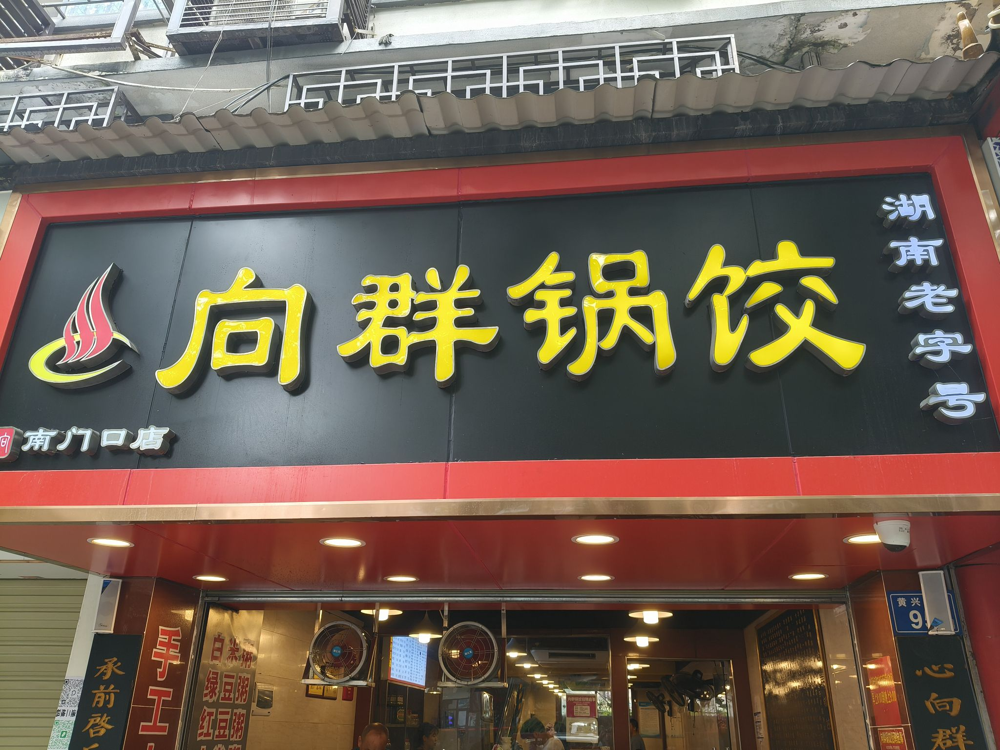
⏰ 体力友好版时间表
- 可睡到自然醒：不必 7 点硬爬；若想避开人流再早，否则 9 点出也行
- 必做：地铁到橘子洲·青莲 → 优先坐观光车/小火车到雕塑（微博踩雷帖：全岛走路会累垮）→ 江边站一会就撤，2h 封顶
- 午餐：回城甘长顺/杨裕兴，或河西简单吃
- 可跳过：岳麓山爬山（她明确「逛景点像煎熬」时优先砍）；若还想文化感，只进岳麓书院平路部分，不登山、不排索道
- 下午空白：回洲际泡澡/睡觉/滨江再走一圈，都算完美一天
- 晚饭：八一桥粉 / 酒店餐厅 / 酱板鸭+茶颜
撤退口令
人太多 / 晒不动 / 腿酸 → 立刻打车回北辰，不解释「来都来了」。
📓 微博札记 · Day3
- 踩雷共识原话级：「橘子洲必须坐小火车！走路会累到怀疑人生」；公众号/现场接驳，别硬走
- 车开不进景区，外面接驳车多——下车直接找观光车/小火车
- 雨天可能临时关园（有帖提过）；出发前瞄一眼天气，关了就改滨江/回酒店
- 岳麓山：国庆人山人海帖极多；她体力偏好下默认砍登山，书院平路都可选
- 步行街「水果捞」刺客、乱点湘菜腹泻——本日不安排游客小吃街
📷 打卡机位（重点）
- 雕塑正面偏右 45°：脸部轮廓清晰，上午 9–11 点光线最好
- 雕塑侧面+江面：人少，适合竖构图
- 橘洲大桥远景：把雕塑和桥同框（需走远一点）
- 岳麓书院「惟楚有材」门联：正面站位，避开头顶过曝
- 爱晚亭：亭+枫（若未红叶也有古建感）；人多就拍亭檐细节
10/4（周日）本地馆吃饭日 · 不进坡子街
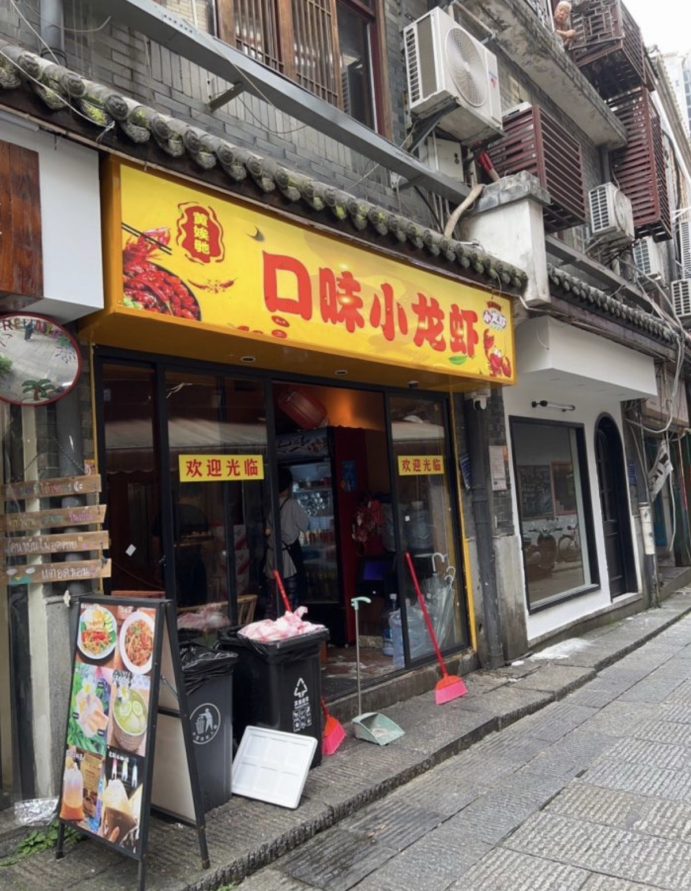
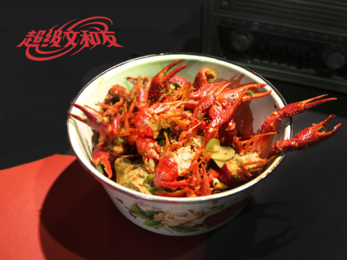
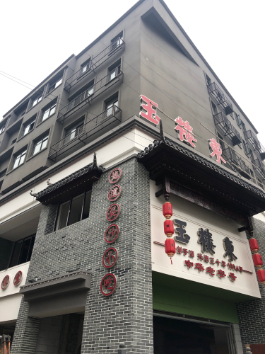
红线：坡子街整条不进（火宫殿总店、鱼嘴巴、黑色经典游客街店一并跳过）。
微博量化：坡子街避雷相关约 28 次；另有本地帖写「正统米粉 8–10 元在居民区，坡子/太平/五一主街 15–25 元还是预制粉」。
⏰ 详细时间表
- 睡够再出门：中午前后出发即可
- 主线 A：🦞 黄娭毑口味小龙虾（高正街54号，约12:00–04:00，人均约¥81）— 本地虾馆，不靠游客街
- 主线 B：若想尝文和友，先看队 ≤40 分钟再进；超了直接去黄娭毑，别折回坡子街
- 正餐湘菜：玉楼东·北正街 或 笨罗卜·育英街14号（本地人平价浏阳菜；不去太平街店）
- 粉面补一刀：甘长顺总店 / 杨裕兴中山路
- 本地人原话：文和友长队时「拐进巷子吃老店」——本次直接黄娭毑，不赌队
- 下午空白：回洲际 / 滨江慢走；不逛太平老街游客线
- 20:30+ 回北辰；饿了酒店大堂吧或北辰荟茶颜
📓 微博札记 · Day4（吃）
- 本地人原话：「下班经过文和友，排队的人还是那么多。我这种本地人基本不去凑热闹，想吃口味虾就拐到旁边巷子老店」 → 本次默认黄娭毑
- 文和友实测吐槽常见「排两小时就为了虾」——≤40 分钟才进，否则立刻换店
- 口味虾吃法：虾 + 清汤面/拌面吸汤汁（多帖当「餐尾必配」）；先说冒辣
- 笨罗卜：本地评「综合实力强 / 人均四十 / 醋蒸鸡+酸菜炒粉皮」；去育英街，不去太平街分店
- 玉楼东：老字号正餐向，适合「想坐下来好好吃一顿」而不是小吃街游击
- 国庆本地年轻人帖：躺平式本地游——不踩饭店雷、不去景点人挤人，靠必吃榜/巷子店
📷 打卡机位
- 文和友永远街/老阳台（若进去了）：复古霓虹；人多就少拍
- 黄娭毑桌面：虾+手套出片，比游客街烟火更真实
- 不拍：坡子街牌楼/小吃街纵深
10/5（周一）轻收尾 · 默认跳过天心阁 · 返杭
⏰ 详细时间表（示例：下午车）
- 09:00前 退房寄存行李
- 默认：酒店早餐 → 特产 → 南站（天心阁低匹配，不值得硬排）。若体力意外很好：可改谢子龙/李自健看展，比登楼更贴她
- 11:30–13:00 买特产（酱板鸭真空装；臭豆腐若想带就南站超市真空款，不专程去坡子街）+ 简餐
- 返程：回洲际取行李 → 打车去长沙南（国庆预留 60–90 分钟到站安检）→ 高铁回杭州东
📓 微博札记 · Day5
- 特产：别人带酱板鸭卤味；有人只带茶颜周边——按她喜好优先酱板鸭真空 + 茶颜最后一杯
- 臭豆腐：想带就南站真空装；专程回游客街不值得
- 体力意外很好时：谢子龙/李自健看展（类型合她），比天心阁登楼值
📷 打卡
- 洲际大堂 / 北辰荟：轻松收尾合影即可
- 若改谢子龙：建筑外观+湖面倒影（馆方机位多）
📡 微博本地手册（详尽版）
3060 帖检索 · 只保留能指导「她会不会开心」的细则 · 广告/行程清单帖已降权
样本与筛选
- 关键词：长沙工作生活、打工人美食、本地人推荐/吃、避雷、口味虾、省博、滨江、橘子洲避雷、文和友排队、国庆等
- 可操作贴约 906；本手册只摘「能改行程」的共识
- 过滤：高德扫街榜软广、蜡像馆硬广、整容/无关岳麓区帖
- 优先级：本地人口吻 > 游客踩雷实录 > 网红打卡清单
和她喜好的交集
- 她要慢 + 本地有「躺平式本地游」→ 每天一事、可撤退
- 她要博物馆讲解 + 本地推省博/烈士公园情侣线 → Day2 主线
- 她要排行榜好吃少空耗 + 本地骂文和友长队/坡子街溢价 → Day4 换馆
- 她怕逛景点煎熬 + 本地骂橘子洲徒步/岳麓人海 → 坐车控量、砍山
✅ 照做 / ❌ 别做（微博共识表）
| 主题 | 照做 | 别做 | 依据强度 |
|---|---|---|---|
| 粉面 | 甘长顺 / 杨裕兴 / 居民区老店（约 ¥8–10） | 坡子街、太平街、五一主街米粉 | 强（价格+预制粉避雷帖） |
| 口味虾 | 黄娭毑等巷子/本地馆；虾后清汤面 | 文和友空耗 >40min；坡子街虾摊 | 强（本地人「不去凑热闹」） |
| 正餐 | 玉楼东；笨罗卜育英街（醋蒸鸡、酸菜炒粉皮） | 笨罗卜太平街店；游客区随机湘菜 | 中强 |
| 省博 | 提前预约；看马王堆；出来烈士公园慢走 | 没预约硬等；出馆再冲五个景点 | 强 |
| 橘子洲 | 接驳+小火车/观光车→雕塑→撤 | 全岛徒步；雨天硬去 | 强（踩雷置顶级） |
| 岳麓 | 最多书院平路 | 登山+索道+爱晚亭连轴 | 强（人海+她体力） |
| 辣度 | 开口「冒辣」；冰粉/酸梅汤备着 | 信「微辣」；乱点不知名湘菜馆 | 强 |
| 街头小吃 | 茶颜（可北辰荟）；酱板鸭真空 | 步行街水果捞称重；坡子街油炸社类 | 中强 |
🗣️ 可引用的本地原话
- 「橘子洲必须坐小火车！走路会累到怀疑人生」
- 「文和友排队…本地人基本不去凑热闹，想吃口味虾就拐到旁边巷子」
- 「不要在太平街、坡子街、五一广场主街吃粉…景区店溢价预制」
- 「省博物馆出来就是烈士公园…很适合情侣逛」
- 「长沙没有微辣」→ 对我们：开口冒辣
- 「年轻人…既不想去饭店踩雷，也不想去景点人挤人，只想躺平式旅游」
🦞 吃：微博点单细化
- 黄娭毑：口味虾一份两人分；必说冒辣；配冰粉/酸梅汤；可加清汤面
- 笨罗卜育英街：醋蒸鸡、酸菜炒粉皮；人均约四十；早去少排
- 玉楼东：正经坐店湘菜，少网红滤镜
- 甘长顺/杨裕兴：牛肉粉/肉丝粉；当早餐或垫胃，别当唯一正餐硬撑
- 茶颜：幽兰拿铁；怕甜减糖；北辰荟就能买，不必为奶茶杀去五一
- 文和友：仅短队；进去也别恋战，虾+走
🏛️ 玩：微博场景细化
- 省博：免费预约；证件；马王堆为主；讲解优先于自拍
- 烈士公园：出馆顺路，树荫湖景，情侣慢走 45–90 分钟够
- 橘子洲：地铁青莲 → 接驳/小火车 → 雕塑 2h 封顶 → 回城
- 书院：可选平路门联；不排索道、不登顶
- 滨江三馆：酒店旁回血点；下雨进博物馆/图书馆
⚠️ 国庆特供避雷
- 人从南站灌进城：抵达日不进五一商圈
- 热门店取号可能爆炸：备黄娭毑/笨罗卜双保险
- 天气：近期有帖提雨天关橘子洲——出门前看一眼
- 「必去清单」帖（坡子+岳麓山连轴）直接忽略，和她偏好冲突
🌶️ 长沙才吃得到的本地馆
已砍掉费大厨等全国连锁 · 高德核实地址/评分 · 优先「长沙才有感觉」的店
筛选原则（她的喜好 × 微博本地）
- 要：本地人会去的馆（口味虾巷子店、粉面老字号、玉楼东/笨罗卜、茶颜、酱板鸭）
- 不要：坡子/太平/五一主街游客店；费大厨等全国连锁；为网红空耗体力
- 开口先说 「冒辣」（微博：微辣仍可能辣哭）；虾后可配清汤面
- 正向提及排序（检索样本内）：茶颜、甘长顺、玉楼东、黄娭毑…；负向头名：文和友排队、坡子街
🏨 北辰洲际附近（走路/打车5–10分钟）
八一桥原味粉馆（北辰店）⭐4.6
📍 北辰三角洲奥城 D2 区车库层 G072
⏰ 约 06:00–22:00 | 💰 人均约 ¥16
为什么算长沙：本地米粉馆，不是全国粉连锁。
点：原味牛肉粉 / 肉丝粉；汤清、粉滑，适合刚下车垫肚子。
鸭想卤·酱板鸭（北辰旗舰）⭐4.5
📍 奥城 E4 区 4 栋 | ⏰ 24h | 💰 人均约 ¥33
长沙特产：酱板鸭真空可带走；当零食/配啤酒都合适。
南站也有黑色经典，但想「本地卤味」优先酱板鸭。
茶颜悦色（北辰荟）
长沙土著奶茶（外地有店也不如长沙密）。新手：幽兰拿铁；怕甜减糖。
酒店累了也可下楼北辰荟解决，不必专程五一。
🚫 坡子街 · 整条避雷
为什么砍掉
有人明确避雷：游客密度高、踩雷店多、性价比不稳定。火宫殿总店 / 鱼嘴巴 / 黑色经典等都在这条线上，一并跳过。
改去这些
- 黄娭毑高正街 — 口味虾
- 玉楼东北正街 — 正餐湘菜
- 甘长顺 / 杨裕兴 — 粉面
- 文和友 — 仅短队时
- 想带臭豆腐：南站超市真空装，别专程去游客街
🦞 口味虾 · 本地馆（非全国连锁）
超级文和友（海信广场）⭐4.8
📍 湘江中路36号 | ⏰ 约 11:00–次日02:00 | 💰 人均约 ¥88+
长沙地标：口味虾 + 老长沙街区；排队超 1.5h 就改下一家本地虾馆。
黄娭毑口味小龙虾 ⭐4.6
📍 高正街54号 | ⏰ 约 12:00–04:00 | 💰 人均约 ¥81
本地人口味虾馆；比全国连锁「小龙虾店」更有长沙味。
不推荐：太平街/坡子街虾馆
📍 与坡子街游客动线重叠，本次一律跳过；虾馆只保留黄娭毑（高正街）。
🥣 粉面锅饺 · 长沙早餐文化
甘长顺（总店）⭐4.4
📍 解放西路136号 | ⏰ 约 06:00–02:00 | 💰 人均约 ¥20
长沙人自己吃的粉面；牛肉粉/肉丝粉。
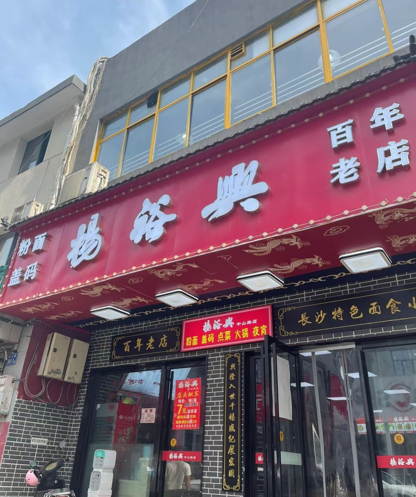
杨裕兴（中山路店）⭐4.4
📍 中山路347号 | ⏰ 约 06:00–02:00 | 💰 人均约 ¥24
百年长沙粉面老字号；与甘长顺可二选一，别浪费胃容量。
向群锅饺
📍 南门口店 / 登高路店（近岳麓）
长沙早餐代表：锅饺+扁豆面/拌粉；岳麓那天可顺路。
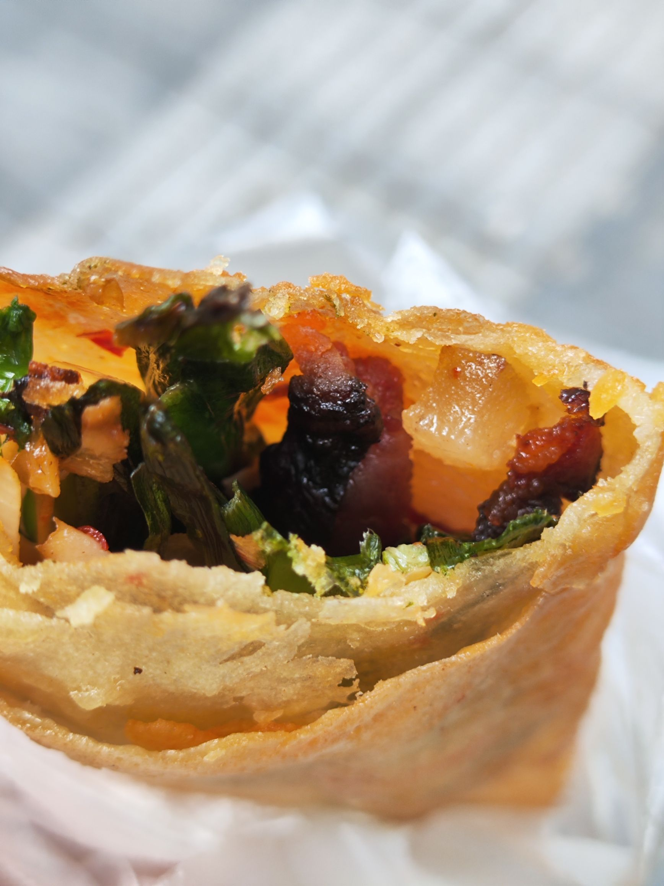
百年德园 ⭐4.6
📍 芙蓉中路三段98号（候家塘）| ⏰ 约 06:00–22:00 | 💰 人均约 ¥10
长沙大包子；路过可买，不当正餐主线。
🍽️ 正餐湘菜（长沙老字号）
玉楼东（北正街旗舰）
📍 北正街32–40号
长沙老字号湘菜，少网红滤镜；适合想吃「正经一顿」时。
笨罗卜浏阳菜馆（育英街）⭐微博本地高频
📍 育英街14号（黄兴铜像附近）| 人均约 ¥40
微博本地帖常推：醋蒸鸡、酸菜炒粉皮；平价烟火。勿去太平街店（游客线）。
点单速查（长沙特有组合）
- 口味虾（黄娭毑）+ 冰粉/酸梅汤
- 玉楼东正经一顿湘菜
- 酱板鸭真空装
- 茶颜 · 幽兰拿铁
- 粉面：甘长顺 / 杨裕兴 / 八一桥
🧭 景点 × 她的喜好（高德全量对照）
不是「长沙必去清单」，是按微博可观察偏好打分 · 高匹配才值得排进日程
先说结论：现有景点她喜不喜欢？
- 真喜欢（高匹配）：湖南博物院、滨江文化园/北辰滨江公园、长沙博物馆+市图、黄娭毑/玉楼东/甘长顺 — 对应「博物馆听讲解」「水岸疗愈」「排行榜本地吃」（坡子街已因避雷删除）
- 能接受但要控量（中匹配）：橘子洲头（江边慢走+雕塑即可）、IFS/茶颜（吹空调逛街）、岳麓书院平路（文化感，不爬山）
- 不太像她（低匹配）：岳麓山登山/索道、天心阁登楼、文和友超长队、远郊梅溪湖拉练 — 撞上她原话「体力差到逛景点像是煎熬」「十一堵车」「排队永远靠前才爽」
评分依据：微博原话（逛景点煎熬 / 睡到自然醒 / 博物馆美术馆公园日 / 横滨式水岸公园 / 排行榜餐厅）+ 国庆拥堵成本 + 距北辰洲际远近（高德）。
行程里保留的景点卡
只放高/中匹配；低匹配已降级为可选或删除
🏺 湖南博物院
📍 东风路50号 · 预约入馆
为何匹配：马王堆+讲解=她福州「博物馆日」同款结构
玩法：只看镇馆，不追求全馆刷完
🌊 滨江文化园
📍 酒店旁 · 三馆一厅/景观塔
为何匹配：水岸公园疗愈；累了 10 分钟回房
加分：同片区长沙博物馆/市图可进室内
🍊 橘子洲头
📍 橘子洲头2号 · 地铁橘子洲·青莲
为何半匹配：江景 Citywalk OK，全岛拉练不行
玩法：雕塑打卡就撤，不走穿
📕 岳麓书院
📍 麓山路273号
为何半匹配：文化深度像京都；山体景区整包不推荐
红线：不排索道、不登顶
🏛️ 长沙博物馆 + 市图书馆
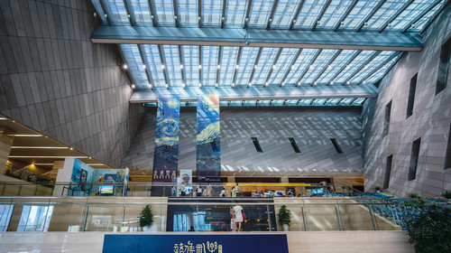
📍 栖凤路与湘江北路交汇西南150米 · 洲际驾车 0.6 km / 约 5 分钟
为何匹配：三馆一厅室内文化点，下雨/太热随时撤退
高德评分：4.6 · 就在滨江文化园旁边
📷 谢子龙 / 李自健
📍 潇湘南路一段 · 洲际驾车 16.0 km / 约 29 分钟（高德实测）
为何匹配：美术馆/影像馆类型她明确喜欢
开放：李自健 周二至周日 09:30–17:30（周一闭馆）
代价：国庆路程易堵；建议替换「天心阁日」而不是硬加一天
🏯 天心阁
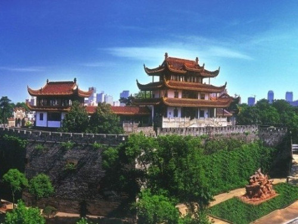
📍 天心路17号
为何低匹配：登楼清单型景点，缺她的锚点
建议：返程日优先酒店慢活 / 特产，不必为打卡登楼
📷 打卡机位图鉴
站哪里、什么光线、怎么避开人头墙
橘子洲 · 青年毛泽东雕塑
- 机位A：正面偏右45°，拍面部轮廓
- 机位B：侧面+江面，竖构图人像
- 时间：9–11点；国庆尽量8:30前到位
岳麓书院 · 门联 / 红墙
- 机位：「惟楚有材」门正面，等人潮空档连拍
- 爱晚亭：亭檐仰拍或侧后方，避开正门拥堵
滨江文化园 · 景观塔
- 抵达日黄金机位；黄昏逆光建筑线条
- 江边步道拍对岸夜景，三脚架友好
黄娭毑口味虾
- 虾上桌先拍手套+红油，再开吃
- 点微辣/冒辣；两人分一份即可
超级文和友
- 永远街霓虹、老阳台俯拍
- 人多就拍局部招牌/餐盘，别死磕空镜
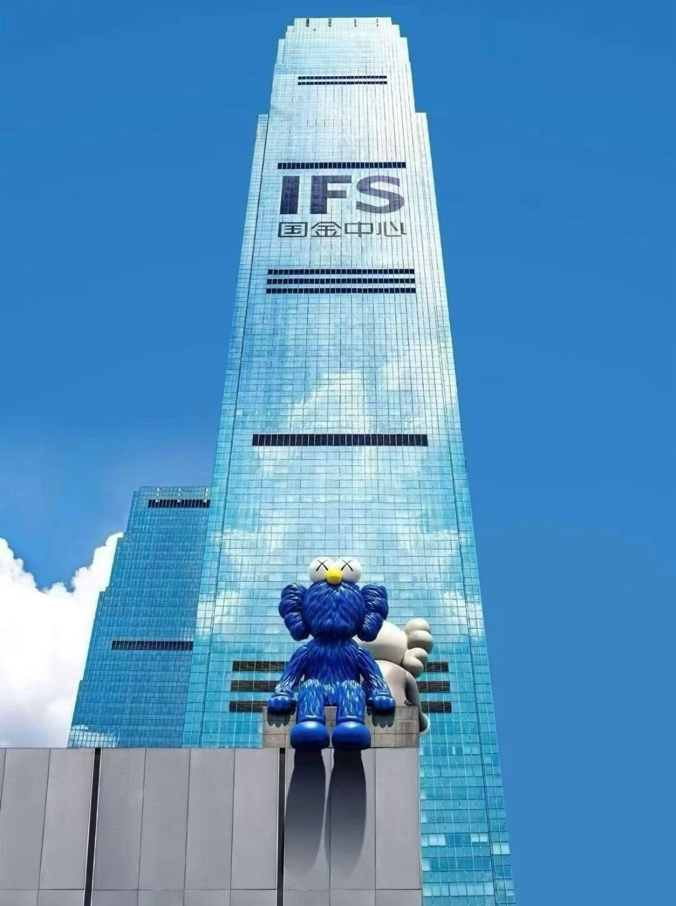
IFS / 五一
- 中庭仰拍玻璃幕墙；外立面夜景
- 茶颜杯子特写 + 商场灯光
💡 真·实用秘籍
删掉「地铁有几号线」「微信能付钱」这类废话 · 只留会影响体验的
🧍 节奏与体力
- 一天一事：每天最多 1 个「必须完成」；其余全是可跳过
- 睡够再出门：比早起避峰更重要——她公开夸过「睡到自然醒」的旅行
- 胜利条件：吃得好 + 没吵起来 + 回得了酒店，不追求打卡齐
- 撤退合法：说「回酒店」不用找理由；洲际就是备选终点
🚦 国庆怎么少受罪
- 南站→洲际：带行李打车，别考验地铁换乘耐心
- 热门店：文和友看队再进（微博吐槽排队极多）；坡子街整条不进（避雷×28）
- 橘子洲：坐观光车/小火车去雕塑，禁止全岛徒步（本地踩雷共识）
- 岳麓山：国庆索道/登山优先砍；书院平路才考虑
- 返程：南站预留 60–90 分钟；宁可早到喝咖啡，别卡点焦虑
🌶️ 吃：少踩雷
- 点单先说 「冒辣」（别信微辣）；备冰粉/酸梅汤
- 口味虾：手套 + 一份两人分 + 清汤面吸汤；黄娭毑优先
- 文和友：≤40min 才进；本地人帖直接劝「别凑热闹」
- 粉面：甘长顺/杨裕兴；拒绝坡子/太平/五一主街粉
- 正餐：玉楼东或笨罗卜育英街（醋蒸鸡、酸菜炒粉皮）
- 特产：酱板鸭真空；臭豆腐南站装；槟榔别跟风
- 她吃得开心时少打断拍照
📋 你要提前搞定的事
- 省博预约：微信/支付宝「湖南省博物馆」，约提前5天、约20:00放票；证件原件
- 高铁：去程卡 11:50 长沙南；返程车次定死并写进备忘录
- 备选清单：下雨→滨江室内馆/酒店；太累→只吃+茶颜；太挤→砍景点保吃饭
- 出发前再看一眼高德天气，薄外套+折叠伞即可
🏨 洲际怎么用好
- 累了优先回酒店：洗澡、睡觉、点客房——比硬撑景点更符合她
- 周边：茶颜（北辰荟）、八一桥粉、酱板鸭、滨江慢走
- 地铁：北辰三角洲 1 号线；去五一/省博够用，细节不必背线路图
🗣️ 两句有用的长沙话
- 冒辣 = 尽量不辣（点餐救命；优先用这个）
- 微辣 = 仍可能超预期，慎用
- 其余长沙话好玩但不影响行程，可跳过
📌 微博手册速查
- 完整对照表、原话摘录、点单细化 → 微博本地手册
- 每日行程里的「📓 微博札记」= 当天可执行版
- 原始数据：
weibo_data/changsha_local/（3060 帖）
📸 相册画廊
酒店 · 机位 · 本地馆子
北辰洲际
住宿基地
滨江文化园
10/1 下午
景观塔机位
抵达日打卡
湖南博物院
10/2
橘子洲雕塑
10/3 机位A/B
岳麓书院
门联打卡
超级文和友
10/4
黄娭毑
高正街本地虾馆
八一桥原味粉馆
北辰奥城 · 本地米粉
甘长顺
本地粉面
向群锅饺
早餐
茶颜悦色
北辰/五一
IFS
逛街机位
天心阁
10/5
高德 POI 实景 · 本地 images/